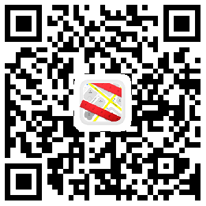
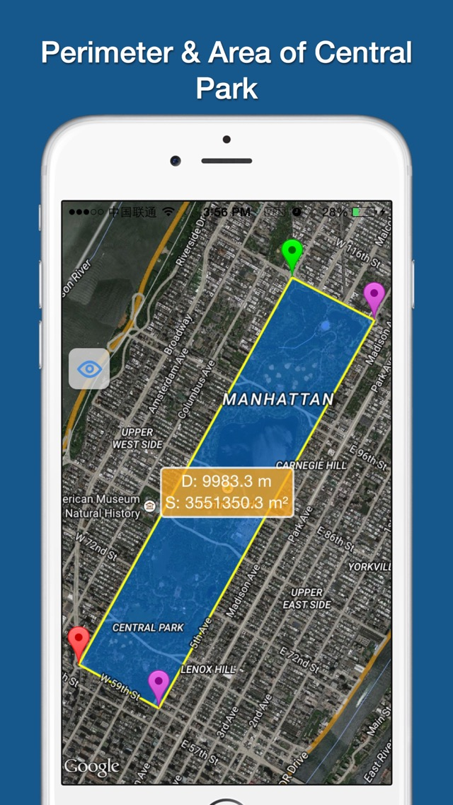
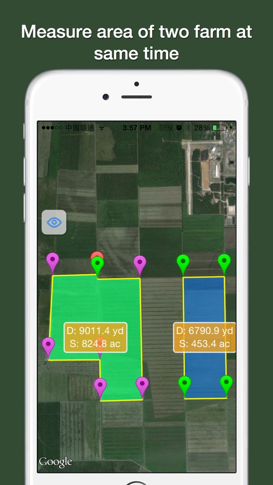

Measure area using google map
How to:
- Click Distance to measure distance of polyline;
- Click Area to measure area of polygon;
- Click Clean to remove all points.
iOS Client -- Support both iPhone and iPad
Planimeter is a map ruler tool for distance and area measurements on maps.
It can measure anything visible on the satellite map, like lawns, fences, farm, road, roofs and so on.
Features:
- Support measure distance and area.
- Support measure distance and area.
- Support measure as path, polygon, star or circle.
- Support measure multiple area at same time.
- Visual records list, save and share.
- Support Apple map and Google map.
- Use cross hair to location, easy and accurate.
- Locate by search or GPS or even a photo.
- Support length unit like foot, nautical mile, mile,inch, yard, meter,kilometer.
- Support area unit like square meter, are, declare, hectare, square kilometer,acre and so on .
- Support custom unit, add any unit your needed.
- Fill color is configurable.

Scan QR-Code to Downlaod:


